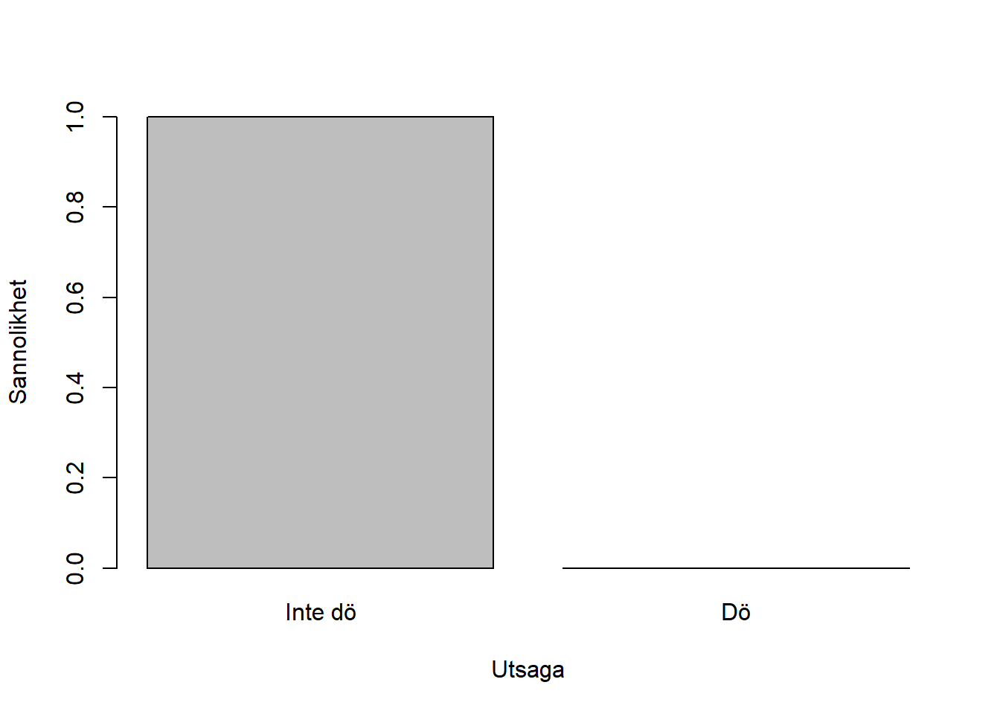
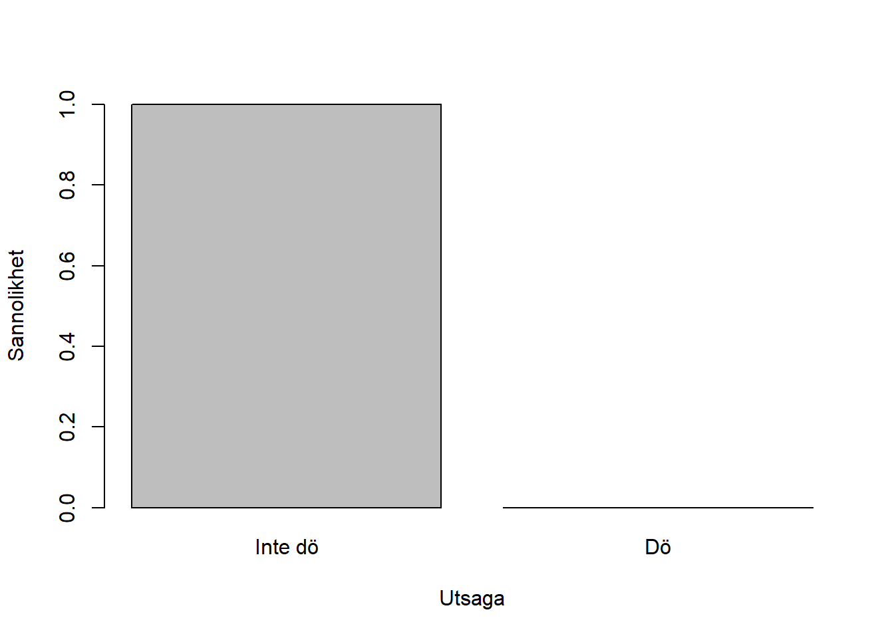
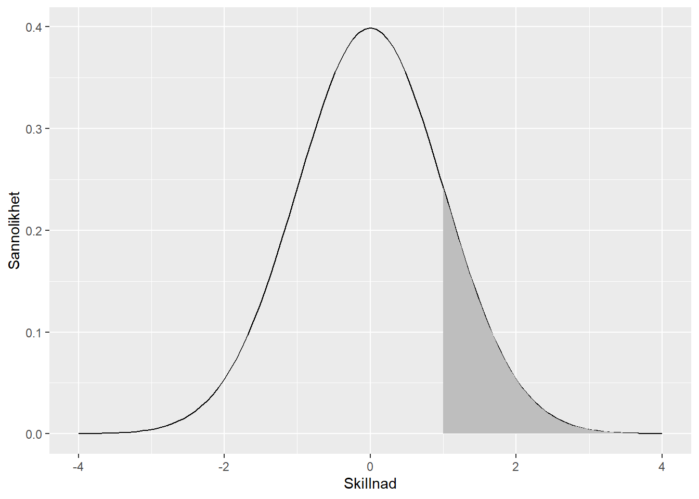

barplot(names.arg = c("Inte dö", "Dö"),
height = dbinom(0:1, size=1, p=0.000005),
xlab = "Utsaga", ylab="Sannolikhet",
ylim = c(0,1)
)
När vi forskar om något vill vi berätta något om det - förstås. Vi vill beskriva hur världen är, hur den fungerar, hur människan beter sig, organisationens delar, und so weiter. Vi kan göra denna beskrivning på många olika sätt, men i denna bok fäster vi oss vid den statistiska beskrivningen.
Verkligheten är dock stor - otroligt stor. Det finns många människor (snart åtta miljarder vid dagsdato!), många åsikter, många mönster, många sätt att vara.
Tänk dig följande exempel: Du vill mäta hur många röster de olika politiska partierna skulle få om ett riksdagsval utfördes nu. Valröstning är ganska enkelt att kvantifiera: en person ger en röst åt ett parti från en förbestämd lista. För att mäta graden av röster för partierna kunde du alltså helt enkelt fråga den finländska röstberättigande befolkningen vem de skulle rösta på just nu.
Men tänk lite noggrannare, så märker du säkert att det finns flera problem här. Hur ska du fråga alla fyra-eller-så miljoner röstberättigade finländare? Vem betalar för detta projekt? Vad ska du göra om ett politiskt parti upphör att existera under din datainsamling?
Eftersom det är praktiskt taget omöjligt att göra sådana totalundersökningar som den ovan beskrivna partiundersökningen, har statistiker och människovetare utvecklat många verktyg för att härleda resultat från mindre grupper. Dessa grupper kallas urval eller sampel, och deras definition, begränsningar, metoder för undersökning, och härledda statistiker är både varierande och mycket viktiga att förstå.
I detta kapitel kommer du att lära dig om denna process av härledning, vilket kan sammanfattningsvis kallas statistisk inferens. Du lär dig om olika sorters urvalsramar, förhållandet mellan urval och population, systematiska och osystematiska felmätningar, statistiska fördelningar, samt olika former av inferens- eller osäkerhetsmått. Detta kapitel hanterar de teoretiska grunderna - senare i boken kommer du att lära dig hur osäkerhet mäts i praktisk forskning.
Den statistiska härledningsprocessen kan delas upp i fem grundläggande steg:
Varje steg berättar något mera åt oss om det vi har mätt, och därigenom om verkligheten.
Vi inleder med det vi vill veta, parametern. Det kan handla om ett medeltal, ett förhållande mellan två variabler, graden av förändring av en variabel över tid, eller något annat. Med andra ord: vad vill vi veta om verkligheten? Matematiskt kan vi förstå denna parameter som en okänd variabel:
\[X\]
Eftersom vi har tagit ett urval, så kan vi strikt taget inte säga något om den verkliga parametern. För att veta något om t.ex. könsfördelningen i Finland måste vi ju veta den exakta mängden invånare inom varje könskategori, och det kräver en totalundersökning. Men allt är inte förlorat: vi kan estimera parametern. En estimering, eller uppskattning, är väldigt enkel: den utgörs av parametern, tillsammans med någon grad av felmätning. Med andra ord: “Jag uppskattar könsfördelningen vara på detta sätt, plus/minus lite felmätning”. Matematiskt kan vi skriva det som en enkel formel:
\[X = \bar{x} + \delta\]
där \(\bar{x}\) (uttalas ‘x-bar’) är vårt estimat och \(\delta\) (grekiska delta, liten bokstav) är vår felmätning. I detta skede behöver vi inte bry oss om hur stora dessa siffror är, eller vad de egentligen står för.
För att förstå hur mycket felmätning det finns i vårt estimat kan vi ta till ett statistiskt verktyg: standardfelet (eng. standard error). Standardfelets beräkning görs genom:
\[ \sigma_{\bar{x}} = \frac{\sigma}{\sqrt{n}} \]
eller i klarspråk: estimatets standardfel är lika med dess standardavvikelse (eng. standard deviation) dividerat med kvadratroten av urvalsstorleken. Nu behöver du inte tänka alltför länge på denna beräkning - du blir bekant med den senare i kapitel XXX. Vad som är viktigt att förstå är att vi kan räkna en exakt siffra på hur mycket felmätning vi tror att vi har i vårt estimat. Denna felmätning beräknas genom spridningen av datapunkterna runtom vårt estimat - något du lär dig mera om senare.
I detta skede har vi redan åstadkommit mycket: vi vet att det finns ett värde som vi mätt (parametern), vi vet att vi har mätt det med onoggranna metoder (estimatet), och vi kan beräkna hur mycket onoggrannhet vi har i vårt mått (standardfelet). Detta säger dock inte ännu huruvida vårt estimat är korrekt, eller hur korrekt det är. För det behöver vi några flera mått: konfidensintervallet och nollhypotessignifikanstestningen.
Konfidensintervallet mäter hur mycket felmätning vi skulle åstadkomma i det långa loppet om vi upprepade vårt urval och estimat oändligt många gånger. Hur man beräknar konfidensintervallet kommer vi tillbaka till. Kort sagt beskriver det hur säkra vi är i urvalets påverkan på vårt estimat - hur mycket av vårt estimat är beroende av vårt urval, och hur mycket är faktiskt korrekt? Vi vill ju säga något om verkligheten i alla situationer, inte bara i vårt urval, så vi måste veta om vi prickar rätt med våra metoder.
Nollhypotessignifikanstestningen (NHST) är en statistisk filosofi som lägger grunden för all statistik vi behandlar i denna bok1. I skillnad till konfidensintervallet, där vi mätte graden av felmätning i det långa loppet, så mäter NHST graden av felmätning i detta urval. Det är alltså ett sätt att kvantifiera hur mycket osäkerhet vi finner i vårt urval, i förhållandet till hur mycket osäkerhet vi vill tolerera. NHST är en filosofi med ungefär 100 år av misstolkningar, grubbel och manipulation, och därför handlar en stor del av detta kapitel om vad NHST kan (och inte kan) göra.
1 Boken handlar om frekvensstatistik. Det finns alternativa synsätt på statistisk forskning, så som Bayesisk statistik, men dessa behandlas inte i boken.
Hur kan vi säga något om felmätningsgraden i vårt parameterestimat, då vi inte vet något om den verkliga parametern? Hur kan vi veta hur noga vi mätte könsfördelningen i Finland, om vi inte vet hur den faktiskt ser ut? Detta dilemma kan se ganska olösligt ut! Som tur är, har några mycket klipska statistiker och matematiker utvecklat verktyg med vilka vi kan estimera det okända: fördelningar.
En fördelning är en föruppfattning om sannolikheten för vissa värden. Fördelningar berättar alltså för oss hur sannolika vissa värden är. Nyckeln här är dock “föruppfattning”: för att vi ska kunna säga något om värdets sannolikhet, måste vi först bestämma för oss att denna sannolikhet har en fördelning som vi kan definiera. Detta kan låta påhittat, som att vi bara drar sannolikheter ur hatten med ingen respekt för verkligheten, men i själva verket fungerar vi som människor väldigt ofta på samma sätt! När jag går på gatan och min generaliserade ångeststörning frågar mig, “Hej du! Vad om en asteroid just nu skulle falla och krossa dig? Vad då?”, så kan jag ju faktiskt inte säga huruvida det kommer eller inte kommer att hända. Det är i framtiden, det okända, och jag måste härleda mig till ett svar. Jag kanske svarar “Ja du, det är väl ganska osannolikt”, eller så svarar jag “Skit då, det kommer säkert att hända, jag kommer att dö snart!”2.
2 Eller, om jag följer terapeutiska metoder, så svarar jag förhoppningsvis “Det kan hända, eller så händer det inte, det är bara att vänta och se.”
I bägge av svaren ovan, så ger jag egentligen asteroidens nedslag en sannolikhet. Högst troligen inte i siffror, men en sannolikhet likväl. Fördelningar gör samma sak, men de förmodar en kvantitativ sannolikhet - de lägger siffror på denna osäkerhet!
Varför är fördelningar viktiga? Jo, för att om vi kan med tillräcklig säkerhet säga att vår parameter kommer från en viss fördelning, så kan vi beräkna hur sannolikt det är att få ett estimatvärde eller ett annat! Om vi tänker tillbaka till asteroidexemplet, så kan vi preliminärt ge några siffror. Enligt Wikipedia-artikeln “Impact event” slår en asteroid med en diameter på högst 1 kilometer ner på Jorden ungefär en gång per femhundratusen år. För enkelhetens skull förmodar vi att jag skulle dö i 100% av fallen där detta sker (oavsett hur nära jag är nedslaget). Sannolikheten för att jag dör i år av att bli krossad av en asteroid är därmed:
\[p(\text{dö}) = \frac{1}{500000} = 0.000002\]
Sannolikheten att jag inte dör av ett asteroidnedslag är inversen av detta:
\[p(\text{inte dö}) = 1-p(\text{dö}) = 1-0.000002 = 0.999998 \]
So far so good, chansen tycks vara väldigt liten för att dö, och väldigt stor för att inte dö. Dessa två siffror kan också ställas upp i en graf, där x-axeln beskriver de olika alternativen (dö, inte dö), och y-axeln beskriver deras unika sannolikhet. Figur @ref(fig:asteroid-pdf) åskådliggör detta.
barplot(names.arg = c("Inte dö", "Dö"),
height = dbinom(0:1, size=1, p=0.000005),
xlab = "Utsaga", ylab="Sannolikhet",
ylim = c(0,1)
)
Vad jag har genererat här är faktiskt en sannolikhetsfördelning Den kallas även en bernoullifördelning, nämnd efter matematikern Jacob Bernoulli (1655/1654-1705). Bernoullifördelningen berättar åt oss sannolikheten för en binär variabel, alltså då utsagan kan vara en av två alternativ - död eller inte död, på eller av, noll eller ett. Många saker i vår värld följer en bernoullifördelning av något slag, och vi kan även förenkla världen till bernoullifördelningar väldigt lätt: antingen är jag utomhus eller inomhus, sjuk eller frisk, död eller i liv, hungrig eller mätt, och så vidare.
Med vissa exempel är det lättare att se att fördelningen förmodas än med andra. Att vara död eller inte är en ganska binär sak - du kan inte riktigt vara “typ, så där liksom död”, alltså något mellan död och i liv. Men du kan vara mer eller mindre hungrig, mer eller mindre sjuk, mer eller mindre rik. Vi kan alltså skilja mellan flera olika sorters variabler: binära, kategoriska eller diskreta, och kontinuerliga. Dödhet är binärt3, men vi kan även förlänga skalan till diskreta kategorier: död, dödligt sjuk, sjuk, frisk.
3 För att förenkla; en biolog har säkert en mer precis definition på liv än vad vi jobbar med här.
Med flera kategorier använder vi inte längre bernoullifördelningen, utan en mer generell variant av den: binomialfördelningen.
För att testa hur pålitligt vårt resultat är använder vi oss av nollhypotessignifikanstestning (NHST), en filosofi som kombinerar två viktiga tankesätt från vetenskapsteorin: Fishers sannolikhetstestning och Neyman och Pearsons hypotestestning.
Ronald Fisher föreslog att vetenskapens uppgift är att räkna ut sannolikheter för händelser. Vi kan förstå detta som att vi ska räkna sannolikheten för vår mätning - hur sannolikt är det att vi fick det resultat som vi mätte, t.ex. könsfördelningen eller medianlönen? Fisher exemplifierade detta genom tankeexperimentet om tetillredning.
I tedryckens lovade land, Storbritannien, har det länge funnits en myt om att vissa människor kan känna igen huruvida en tekopp har tillagts genom att lägga i mjölk före tevatten, eller tevatten före mjölk. Kan vi testa detta empiriskt? Jo, säger Fisher! Vi låter en person som påstår sig kunna skilja på dessa tillredningssätt smaka på ett antal tillagda te. Hen4 visste inte i vilken ordning tedrycken hade tillretts.
4 I ursprungsexemplet var det tal om en kvinna, men könet är inte relevant för detta exempel.
[FUNDERA UT NÅGOT NYTT HÄR.]
Den andra delen av NHST baserar sig på tanken om hypoteser, av Neyman och Pearson. Det finns fyra grundläggande steg i hypotesprocessen:
Processen åskådliggörs bäst med ett exempel. Min partner har märkt att det tycks finnas väldigt många metalheads (personer som lyssnar på metallmusik) inom naturvetenskaperna i Finland, men jag har inte märkt någon större mängd av dem inom samhällsvetenskaperna. Frågan vi ställer är därmed: Finns det fler metalheads inom naturvetenskaperna än inom samhällsvetenskaper?
Från denna fråga kan vi formulera två hypoteser:
\(H_1\): Det finns fler metalheads inom naturvetenskaperna än inom samhällsvetenskaperna.
\(H_0\): Det finns lika många metalheads inom naturvetenskaperna och samhällsvetenskaperna.
Det är viktigt att märka, att nollhypotesen är inte inversen av den alternativa hypotesen - ett negativt förhållande är också ett förhållande. Vi vill jämföra med avsaknaden av förhållande.
Härifrån kunde vi nu formulera ett test som kan bevisa nollhypotesen fel. Vi kan utföra en enkätstudie på alla natur- och samhällsvetare i Finland, och fråga dem vilken musikstil de främst lyssnar på. Sedan kan vi jämföra graden av metallyssnare inom bägge vetenskapsområde. Om de resulterande graderna inte är desamma, så kan vi förkasta nollhypotesen: det finns olika mängder metalheads inom respektive vetenskapsgren, så då kan det logiskt inte vara så att det finns lika många i bägge. Med andra ord:
\[ H_0: \frac{n_\text{metall i naturvetare}}{n_\text{naturvetare}} = \frac{n_\text{metall i samhällsvetare}}{n_\text{samhällsvetare}} \] \[ H_1: \frac{n_\text{metall i naturvetare}}{n_\text{naturvetare}} > \frac{n_\text{metall i samhällsvetare}}{n_\text{samhällsvetare}} \]
Utifrån de två presenterade tankesätten får vi nollhypotessignifikanstestning, eller NHST:
Hur räknar man då sannolikheten? Här kommer fördelningarna till hjälp! Om vi förmodar att vår urvalsprocess följer en viss fördelning, t.ex. normalfördelningen, så kan vi kolla var på fördelningskurvan vår mätta skillnad (skillnaden i graden av metalheads mellan naturvetenskaper och samhällsvetenskaper) ligger. För att göra detta måste man dock ofta standardisera det mätta värdet enligt en eller annan metod. Vi hanterar dessa metoder senare i boken, så låt oss nu bara säga att skillnaden, efter att den har blivit standardiserad, är 1 (på en skala av ungefär -4 till 4). Vi kan rita upp en graf som visar visuellt hur stor sannolikhet ett värde på 1 eller mera är på en normalfördelning:
library(ggplot2)
ggplot(data.frame(x=c(-4, 4)), aes(x=x)) + stat_function(fun=dnorm) + geom_area(stat="function", fun=dnorm, fill="grey", xlim = c(1,4)) + xlab("Skillnad") + ylab("Sannolikhet")
Hur vi exakt beräknar sannolikheten är aningen för komplext för att hantera i denna bok; i praktiken låter vi R räkna den för oss. Resultaten är en siffra, kallat ett p-värde, som varierar mellan 0 och 1 och berättar för oss sannolikheten att få vårt värde eller större om nollhypotesen vore sann.
Före vi går in för att förstå olika osäkerhetsmått är det bäst att klargöra vad det är som vi mäter. Vi har redan diskuterat noll- och alternativa hypoteser, men vi kan ställa upp en synnerligen enkel tabell av det vi mäter:
| Sant i verkligheten | Falskt i verkligheten | |
| Sant i mätningen | hit vill vi nå! | Typ I fel (\(\alpha\)) |
| Falskt i mätningen | Typ II fel (\(\beta\)) | detta är också okej! |
Vi vill att vår mätning motsvarar verkligheten; om skillnaden återfinns i mätningen, ska den helst återfinnas i verkligheten, och om skillnaden inte finns i mätningen, ska den helst inte heller finnas i verkligheten. Det kan dock gå ‘fel’ på två sätt:
Typ I fel är detsamma som vårt p-värde: det är sannolikheten att finna vår skillnad (eller större) om den inte finns i verkligheten, alltså att nollhypotesen är sann. Ju lägre gräns vi håller på typ I fel, desto säkrare kan vi vara på våra resultat om sannolikhetstestet underskrider gränsen.
Typ II fel är ‘motsatsen’ av typ I fel, sannolikheten att vi mäter ett nollresultat då det faktiskt finns en skillnad. Inversen av typ II felet, \(1-\beta\), kallas för statistisk styrka, och mäter sannolikheten att finna sanna positiva. Denna vill vi hålla så hög som möjligt - vi vill ju inte missa skillnader då de faktiskt finns!
Det finns dock ett förhållande mellan Typ I fel och Typ II fel: när \(\alpha\) stiger så sjunker \(\beta\), och när \(\beta\) stiger så sjunker \(\alpha\). Detta betyder att när graden av typ I fel faller (bra!), så stiger graden av typ II fel (dåligt!), vilket innebär att den statistiska styrkan faller (också dåligt!). Omformulerat: När vi minskar gränsen på vad som tas som pålitligt (och därmed ökar pålitligheten av resultat som uppfyller vårt krav), så ökar vi graden av sanna positiva som vi kastar bort. Det är alltså inte nödvändigtvis fallet att vi vill ha ett så lågt p-värde som möjligt, eftersom det ofta innebär att vi börjar kasta ut barnet med badvattnet.